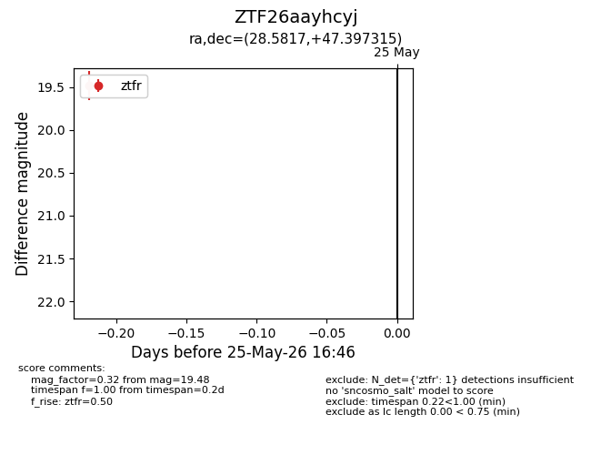
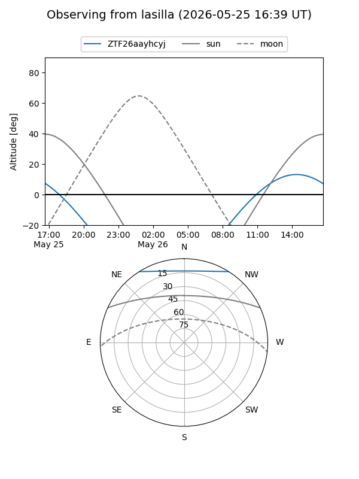
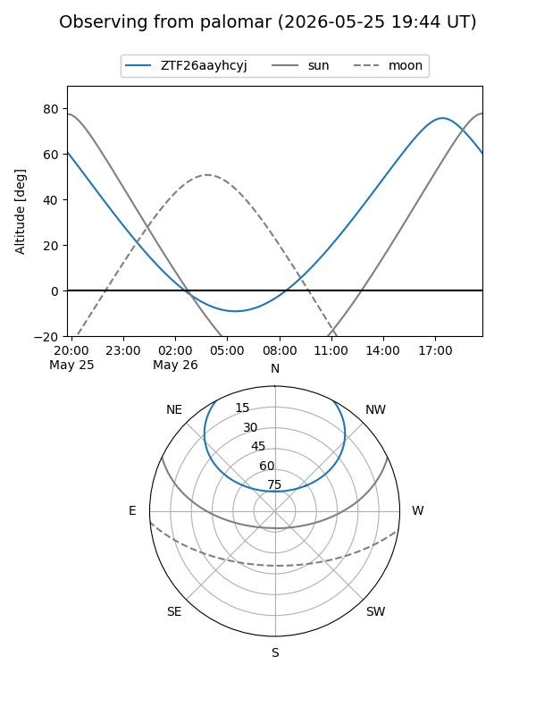

ZTF26aayhcyj
Target ZTF26aayhcyj at 2026-05-25 16:48
Aliases and brokers:
lsst-FINK: link
lsst-Lasair: link
lsst-ALeRCE: link
ztf-FINK: link
ztf-Lasair: link
ztf-ALeRCE: link
alt names
ZTF26aayhcyj (ztf,fink_ztf)
Coordinates:
equatorial (ra, dec) = 28.5817,+47.39732
equatorial (HMS+DMS) = 01:54:19.61,+47:23:50.33
galactic (l, b) = (133.8354,-14.13863)
Flags:
Photometry:
last ztfr=19.48
1 ztfr detections
Lightcurve

Visibility


Additional plots